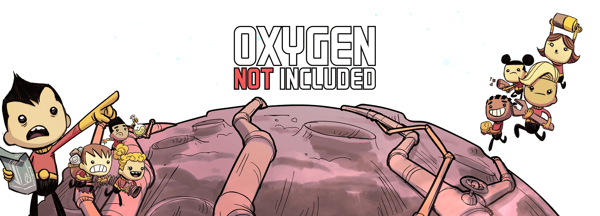

Olá meu nome é Isabelli e esse aqui é meu primeiro site que vou fazer SOLO, sem ninguém, sem assistir ninguém ou pegar ideia/copiar.
Pra alguém que está em um curso técnico eu deveria ter começado antes... 😕 É sou culpada nesse aspecto, mas: "Antes tarde do que nunca" como já dizia alguém.
Vamos falar um pouco sobre jogos...Aaah como eu amo jogos, eles tem o poder de me levar para outros universos, aventuras e viver como diferentes raças em diferentes tempos. Então separei aqui alguns jogos INDIE que eu jogo ou já joguei e que gosto bastante, quem sabe você encontre algum que te deixe curioso(a) 😉.
Darkwood é um jogo indie produzido pela empresa polonesa Acid Wizard Studio. Darkwood é um jogo de terror e sobrevivência, com perspectiva vista de cima para baixo.
O jogo se passa em uma floresta da Polônia Soviética, onde nosso personagen e outros estão presos dentro dela e não conseguem sair, algo os mantém presos ali dentro, não deixando-os escaparem, transformações e coisas estranhas estão presentes nesse lugar, é melhor manter os olhos bem abertos...E durante a noite FIQUE PERTO DA LUZ.
O jogo consegue criar uma atmosfera incrível que te faz mergulhar nesse universo, a trilha sonora, cada som que você escuta, um galho quebrando, cachorros latindo ao longe, e pra piorar só conseguimos olhar para onde nosso personagem está virado deixando tudo ainda mais imersivo.
Blasphemou é um jogo metroidvania e hack and slash, produzido pela The Game Kitchen.
Blasphemous trás na sua história muitos elementos e simbologias católicas, sendo desenvolvido por um estúdio espanhol trás também muito da mitologia e cultura dos mesmos, como por exemplo o que seria o chapéu do nosso personagem, o capirote. Capirote é o cone que os nazarenos ou penitentes usam na cabeça nas procissões da Semana Santa na Espanha.
Blasphemou foi um jogo que me diverti muito jogando, suas histórias e simbologias me fizeram amar esse jogo e ser colocado no meu hall de jogos preferidos
Se você for fã de Hollow Knight talvez este jogo te agrade. Ele é um jogo de plataforma focada no combate, matando monstros, procurando itens e melhorando seu personagem para que chegue mais longe em sua história.
Slime Rancher é um jogo de simulação e aventura, desenvolvido pela Monomi Park um estúdio americano independente.
Em slime rancher você vive a vida uma fazendeira chamada Beatrix, em um planeta alienígena a muitos anos-luz de distância da Terra. A diferença é que não cuidamos de vacas, porcos e galinhas aqui, nós cuidamos de slimes e ganhamos a vida vendendo seus cocôs. Exploramos bastante do grande mundo em que beatrix vive, indo atrás de mais slimes e comidas para alimenta-los e assim ficarmos ricos...vendendo cocô.
Conheci Slime Rancher quando estava lançando o primeiro ainda, estava no beta e eu já estava jogando, só para se ter noção nossa personagem nem nome tinha ainda, nem histórias. Quando foi lançado o trailer do 2 hypei DEMAIISS, só estou esperando sair mais atualizações do 2 para voltar a jogar. Pode se dizer que acompanho a Monomi Park desde o começo.
Slime Rancher é um jogo bem casual e MUITO FOFINHO, é aquele tipo de jogo onde você joga pra se desestressar e ficar de boa com a vida, sonhando em viver em uma fazenda...(Stardew Valley memories). Esse é outro dos meus jogos favoritos, segue trailer do segundo jogo que está em lançamento.
Graveyard Keeper é um jogo de simulação e rpg desenvolvido pela Lazy Bear Games.
Imagine que você está voltando do trabalho quando de repente ao atravessar a rua para chegar na sua casa você vê luzes fortes, ouve um som de buzina e um carro vindo muito rápido na sua direção, e então algo acontece, ouvimos um barulho muito alto e de repente quando acordamos estamos em algum lugar estranho e antigo...Na idade média mais específicamente. Bom é isso que acontece com nosso personagem. A partir daí começamos a morar numa casa ao lado de um cemitério que estava abandonado, então um padre nos pede para que cuidemos desse mesmo cemitério, e é aí que entra uma das nossas missões principais e foco do jogo, além é claro de conseguir voltar para seu tempo. (É quase um stardew valley só que as plantas são corpos 😃).

Oxygen not included foi desenvolvido pela Klei entertainment, é um jogo de gerenciamento de colônias.
Em Oxygen not included ao utilizarmos um portal para viajar os planetas com objetivo de explora-los, acabamos ficando dentro de um planeta, tipo em baixo da terra, a partir daí temos que controlar nossos tripulantes e fazer com que possam sobreviver às adversidades, desde falta de oxigênio, comida, lidar com calor e com frio, germes na comida e água, doenças até a radição.
É um jogo bem complexo que até hoje eu nunca aprendi direito, tem uma curva de aprendizado bem grande, mas é super divertido, principalmente quando vamos aprendendo a usar a mecânica e tecnologia do jogo. Foi esse jogo que me despertou as minhas curiosidades em química, comecei a jogar antes mesmo de lançar, no beta, te falar que naquela época eu sabia mais do que agora, acabei ficando muito tempo sem jogar e fui voltar a jogar e já estava lançado e com DLC's 😮.